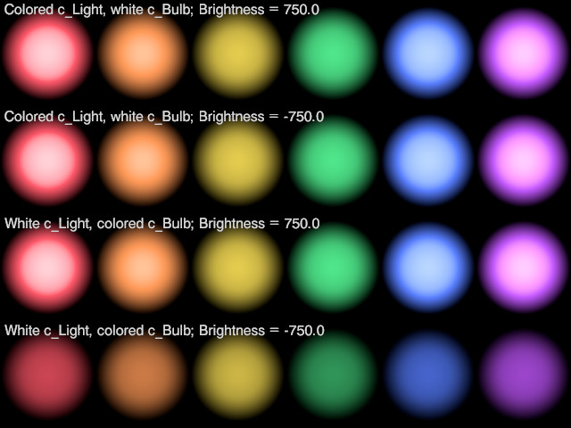

![[Thumbnail which links to a larger demo image]](desklamp.jpg "Larger demo image") This manual describes tools used to construct the desk lamp. Ordinarily, you will not need to use these tools, but they may be used for constructing your own lamps.
This manual describes tools used to construct the desk lamp. Ordinarily, you will not need to use these tools, but they may be used for constructing your own lamps.
This manual describes tools used to construct the desk lamp. Ordinarily, you will not need to use these tools, but they may be used for constructing your own lamps.
|
Returns a material suitable for a glowing light bulb.
Warning: If the POV-Ray version or #version is less than 3.7, then global_settings { ambient_light } must remain at its default setting for this macro to work properly.
| Formal Parameter | Type | Description |
|---|---|---|
c_Light |
color | The light emission color. Any filter or transmit components are ignored. This color will be filtered by c_Bulb. An appropriate value is the c_Surface_out output from macro Lamp_Lighting(). Use rgb 0 if the light is off. |
c_Bulb |
color | The color of the bulb. Any filter or transmit components are ignored. |
Glossy |
float/Boolean | Whether or not the material is glossy. |
A general argument range check. If the argument is out-of-range, the render is halted with a parse error and an informative message.
| Formal Parameter | Type | Description |
|---|---|---|
s_Caller |
string | The name of the macro that is requesting the range check. |
Value |
float | The value of the argument being checked. |
s_Name |
string | The formal parameter name of the argument being checked. |
Min |
float | The minimum allowed value. |
Max |
float | The maximum allowed value. |
A flexible conduit with a helical texture normal. The object can be bent along a circular arc. The object in its unbent state is oriented vertically, with the bottom end at the origin. It is 1.27 units in diameter, with 3 coils per unit along its length.
| Formal Parameter | Type | Description |
|---|---|---|
Length |
float | The length of the conduit. |
Flex |
float | The amount of bending, in degrees. A positive value flexes in the z direction, and a negative value flexes in the −z direction. The allowable range is −180 to 180. |
t_Texture |
texture | The object’s base texture. A helical normal will be applied to this. |
Creates ambient and diffuse statements consistent with the Lamp_c_Ambient and Lamp_Diffuse global parameters. This macro should be called from within a finish block, and is not intended for glowing objects.
| Formal Parameter | Type | Description |
|---|---|---|
Diffuse |
float | The desired finish diffuse. |
Occlusion |
float | An ambient multiplier. Use 1 for an ambient synchronized with the Diffuse argument; or a smaller value for a darker ambient. |
Returns the flex angle in radians required to aim a flexible neck at a given 2-D point. The aim direction is to the right of and perpendicular to the top of the neck. If no such angle is possible, then a number greater than π is returned.
| Formal Parameter | Type | Description |
|---|---|---|
lFlex |
float | The length of the flexible part of neck. |
lRigid |
float | The length of the rigid uppermost part of neck. |
uv_Aim |
2-D vector | The point to be aimed at. The .x component must be non-negative. |
This section summarizes the derivation of the function used by Lamp_Flex_Angle(). You are free to ignore this section.
Returns true if the argument has a .t component, false otherwise.
Caution: A scalar argument will test as having a .t component.
| Formal Parameter | Type | Description |
|---|---|---|
v_Arg |
vector | The vector to be tested. |
A flexible helical conduit, implemented as an isosurface. The object can be bent along a circular arc. The object in its unbent state is oriented vertically, with the bottom end at the origin. It is 1.27 units in diameter, with 3 coils per unit along its length.
| Formal Parameter | Type | Description |
|---|---|---|
Length |
float | The length of the conduit. |
Flex |
float | The amount of bending, in degrees. A positive value flexes in the z direction, and a negative value flexes in the −z direction. The allowable range is −180 to 180. |
Calculates some lighting values for an isotropic light source. The calculations assume a fade_power of 2.
Scalars used for color arguments will be automatically promoted to colors.
| Formal Parameter | Type | Description | In/Out |
|---|---|---|---|
s_Caller |
string | The name of the calling macro. This name will be written with any error messages. | input |
c_Light |
color | The color of the unfiltered light. Any filter or transmit components are ignored. | input |
c_Bulb |
color | The color of the bulb, which acts as a filter on the light’s color. Any filter or transmit components are ignored. | input |
rBulb |
float | The bulb radius in centimeters. For a standard A19 or A60 bulb, this is 3.0. | input |
Brightness |
float | The light’s brightness in lumens. If negative, then the absolute value will be used, but reduced according to the luminance of the bulb color. If positive, then the bulb color will not affect the lumens. For example, if Brightness is 1100, then a red bulb will yield 1100 lumens; but if Brightness is −1100, then a red bulb will yield only 234 lumens, because red is darker than white.
|
input |
c_Light_out |
color | The calculated lighting color, adjusted for lumens, but without attenuation adjustments. To obtain the light_source color, multiply this by Light_brightness_out. |
output |
Light_brightness_out |
float | The calculated light_source brightness, relative to c_Light_out. To obtain the light_source color, multiply this by c_Light_out. |
output |
Fade_distance_out |
float | The calculated fade_distance for the light_source, in centimeters. |
output |
c_Surface_out |
color | The calculated bulb surface glow. This may be used as the c_Light argument to macro Lamp_Bulb_Material(). |
output |
In order to receive the results of the calculations, the last 4 arguments must be identifiers that have already been declared.
Error messages issued by Lamp_Lighting() will cite the formal parameters c_Light, c_Bulb, and Brightness by name; therefore, it will be helpful to the end user that any lamp macro that calls Lamp_Lighting() use the same names for its own corresponding formal parameters.
The following illustration shows the filtering effects of the Brightness and c_Bulb arguments. It was rendered with UberPOV glare desaturation (+GLD) to give a proper luminance impression. Each spot is the illumination from a spotlight 1 meter from the surface. The bottom row shows that a negative Brightness causes the color of the bulb to reduce the lumens output. (The bulbs themselves are not rendered.) A light color such as yellow reduces the luminance only slightly, but a dark color such as blue reduces the luminance considerably. Although the second row from the top also has a negative Brightness, the luminance is not reduced, because the bulb is white.

Creates ambient and diffuse statements consistent with the Lamp_c_Ambient and Lamp_Diffuse global parameters, and adds additional ambient. This can be used on parts of a lamp very close to the light bulb. This macro should be called from within a finish block.
Warning: global_settings { ambient_light } must remain at its default setting for this macro to work properly.
| Formal Parameter | Type | Description |
|---|---|---|
Diffuse |
float | The desired finish diffuse. |
Occlusion |
float | An ambient multiplier. Use 1 for an ambient synchronized with the Diffuse argument; or a smaller value for a darker ambient. |
c_Glow |
color | Additional ambient effect, as from a nearby glowing object. |
Returns the gray scale value of a color, using Lamp_c_Weights as the luminance function.
| Formal Parameter | Type | Description |
|---|---|---|
Color |
color | The color to be evaluated. |
Returns a transformation that reorients and repositions an initially upright fixture. The un-transformed fixture is assumed to be at the origin and facing the +z direction.
Scalar arguments will be automatically promoted to vectors where necessary.
| Formal Parameter | Type | Description | In/Out |
|---|---|---|---|
pv_Base |
point vector | The desired location of the base of the fixture, using the same unit of length as pv_Aim. |
input |
v_Up |
vector | The desired direction of the fixture’s vertical axis. If the null vector is used, then y is assumed. |
input |
pv_Aim |
point vector | A point in the direction at which the fixture will be facing, using the same unit of length as pv_Base. If this point is on the line passing through pv_Base along the direction of v_Up, then the final orientation will be indeterminate. |
input |
Warning_up |
float/Boolean | Will be set to true if v_Up is the null vector, false otherwise. |
output |
Warning_aim |
float/Boolean | Will be set to true if v_Aim is on the line passing through pv_Base along the direction of v_Up; false otherwise. |
output |
In order to receive the warning statuses, the last 2 arguments must be identifiers that have already been declared.
Creates a light source with a fade power of 2. If Lamp_Debug is true, then SDL code for the light source, and optionally, a simplified lamp fixture hood, is written to the debug stream.
Scalar arguments will be automatically promoted to colors or vectors where necessary.
| Formal Parameter | Type | Description |
|---|---|---|
s_Caller |
string | The name of the calling macro. This name will be written with any error messages. |
pv_Location |
point vector | The location of the light source in centimeters, relative to an arbitrary point on the fixture, assuming that the fixture faces the +z direction, and prior to any transformations. |
c_Light |
color | The color of the light. The brightness of this color should be pre-adjusted for attenuation; an appropriate value can be obtained by multiplying c_Light_out and Light_brightness_out outputs from macro Lamp_Lighting(). |
Fade |
float | The fade distance, in centimeters. An appropriate value is the Fade_distance_out output from macro Lamp_Lighting(). |
v4_Soft |
vector/4-tuple | Area light control; the components are:
|
Photons |
float/Boolean | Whether or not the light shoots photons. |
s_Hood |
string | This argument serves two functions: to determine what sort of light to create, and—if Lamp_Debug is true—to determine the style of hood to be coded in the debug stream output. Recognized styles are as follows:
|
zHood |
float | How far the hood of the lamp fixture extends beyond the center of the light source, in centimeters. This argument is relevant only if Lamp_Debug is true. |
Xform |
transformation | A transformation to be applied to the light source. This should include any transformation to the light bulb and hood relative to the rest of the fixture, as well as the scaling and final positioning of the lamp fixture as a whole. |
A light switch. The switch is rocker-style with a superellipse footprint, a surrounding rim, and a plastic-looking black texture. It is oriented horizontally and toggles in the z-direction.
| Formal Parameter | Type | Description |
|---|---|---|
State |
Boolean or float | The on-off state. Although the switch type is binary, values between 0 and 1 are accepted and rendered accordingly. |
Issues warnings concerning questionable global parameter values. This macro should be called at the start of every lamp construction macro. Each warning will be issued only once, regardless of how many lamps are instantiated.
Returns an adjustment to the physical size of an area light, based on the sampling resolution. Use this for the length of the area light vectors. See Area light idiosyncrasies in povray.binaries.images for the rationale for this function.
| Formal Parameter | Type | Description |
|---|---|---|
x |
float | The diameter of the light source. |
y |
float | The sampling resolution of the area light, corresponding to Size_1 or Size_2 in the POV-Ray Reference. |
A function to be used in a texture normal that simulates a flexible helical conduit in its straightened state. The function is fitted to a vertical cylinder of radius 0.635 centered on the y axis, and has 3 coils per vertical unit. This function should be used with slope map Lamp_sm_Coil.
An isosurface function that yields a flexible helical conduit in its straightened state. The conduit is oriented vertically, is centered on the y axis, is 0.635 units in radius, and has 3 coils per vertical unit. The default isosurface threshold and polarity are assumed.
The light bulb object should be upright and scaled in centimeters. The origin should be at the top of the bulb’s base (screw-in cap or bayonet mount), with the base itself below the origin. The base, which will be hidden inside the socket, need not be modeled. If the height of the bulb is LAMP_HBULB, then the end of the bulb will be flush with the mouth of the hood of Lamp_Flexneck().
DeskLamp uses the bounding box of the bulb to compute the light source position and the area light. If the bulb is complex or uses a sphere_sweep, intersecting it with a bounding object may be advisable.
For DeskLamp to apply an automatic surface glow, any glowing part of the bulb must be untextured. If modeling a compact fluorescent bulb, the ballast (not including the base) should be above the origin and should have a texture.
| Identifier | Type | Description | Value |
|---|---|---|---|
Lamp_sm_Coil |
float | A slope map to be used with Lamp_fn_Coil_Normal for a texture normal to simulate a flexible helical conduit. |
|
LAMP_HBULB |
float | The assumed length of a light bulb in centimeters, excluding the base. | 8.6* |
*Official numbers are elusive; the only reference I could find was on Wikipedia, and there was no sign of their figure at the cited source. Wikipedia’s figure, 110 mm, is longer than my A19 LED bulb, but shorter than my CFL (a spiriform compact fluorescent, probably around 800 lumens), so I just used the Wikipedia figure as a compromise and subtracted 24 mm for the screw-in base.
Any identifiers in desklamp.inc that are not documented in this Technical Manual or in the User Manual are considered “private” and are subject to change or elimination in a future update.
Copyright © 2022 Richard Callwood III. Some rights reserved.
This library is free software; you can redistribute it and/or modify it under the terms of the GNU Lesser General Public License version 2.1 as published by the Free Software Foundation.
This library is distributed in the hope that it will be useful, but WITHOUT ANY WARRANTY; without even the implied warranty of MERCHANTABILITY or FITNESS FOR A PARTICULAR PURPOSE.